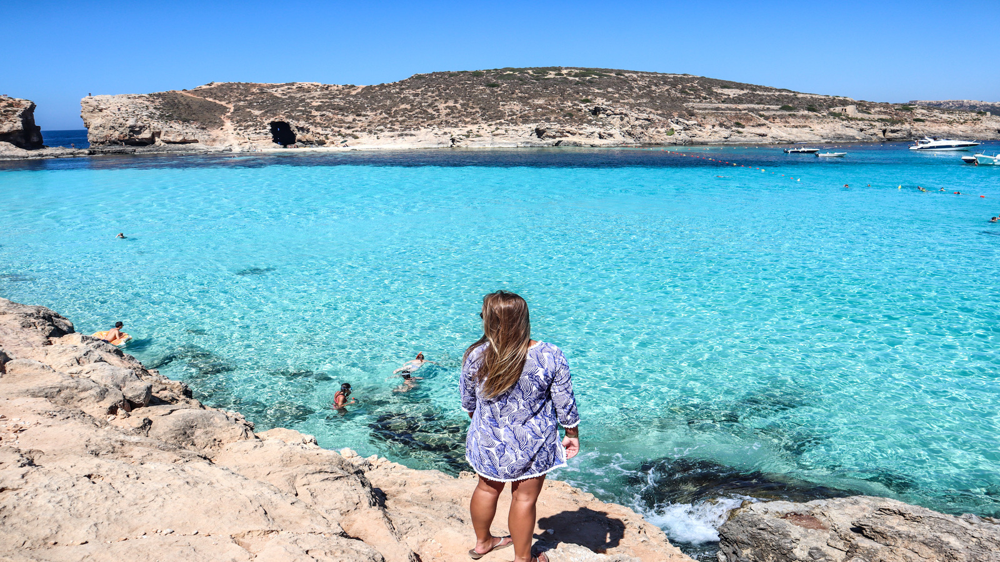
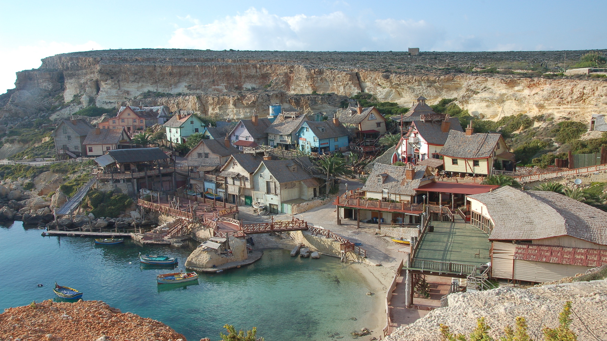
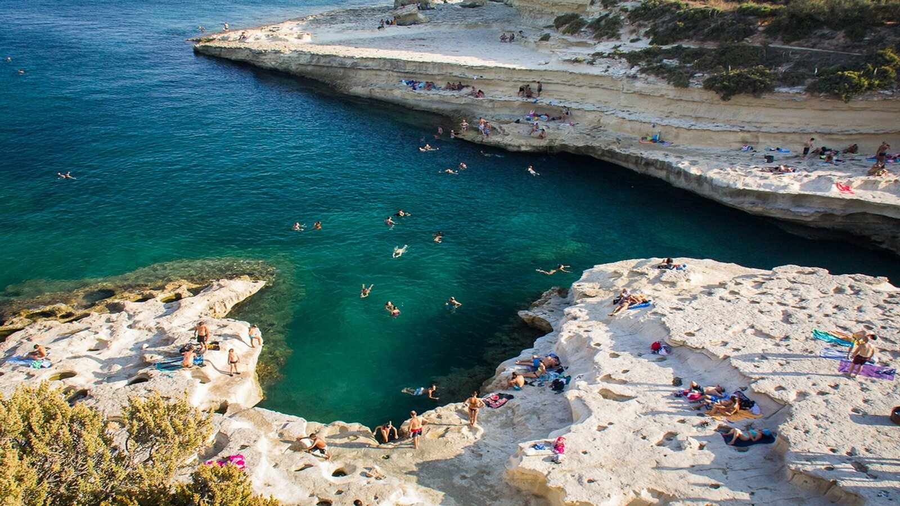
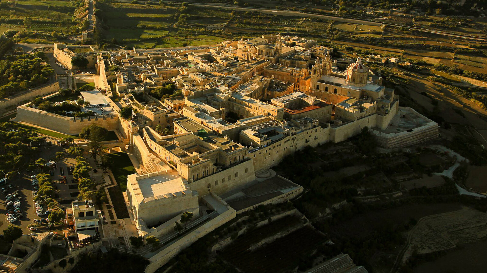
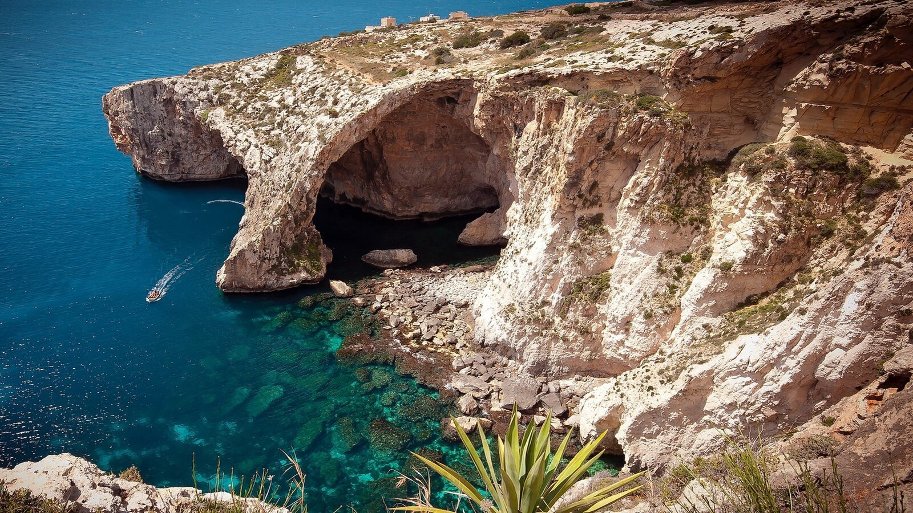
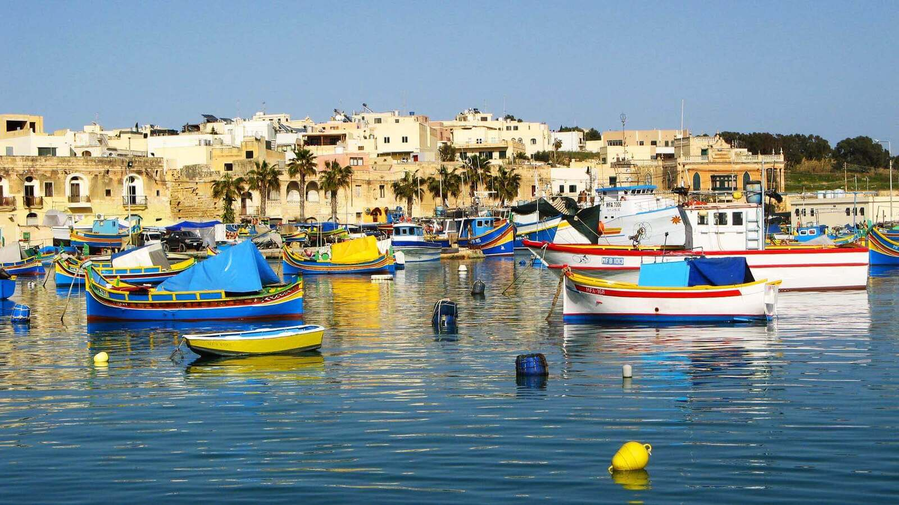

Blue Lagoon

Uma praia de águas azul-turquesa e areias brancas é o que você encontra em Blue Lagoon, na menor ilha do arquipélago, Comino.
Devido ao tamanho do lugar, a infra-estrutura é bem básica e só há um hotel.
Para chegar lá é somente de barco, que pode ser os de excursões fechadas, que incluem também outros pontos turísticos de Malta, ou por conta própria pegando alguma embarcação direto para Blue Lagoon.
Popeye Village

Que tal conhecer o set de filmagem do musical de um dos personagens mais famosos dos quadrinhos mundiais?
A Vila do Popeye fica em Malta e foi utilizada para as gravações do filme na década de 80. A Vila é um parque de diversões, mas também um museu e espaço para eventos. Se tiver dúvidas sobre o que fazer em Malta, dá uma conferida da Vila do Popeye e se encante com as casinhas coloridas da aldeia do famoso personagem fã de espinafre!
Saint Peter's Pool

Um dos principais pontos turísticos de Malta fica próximo da vila de Marsaxlokk, ao sul de Malta e é, como o próprio nome indica, mais uma das piscinas naturais em meio às rochas calcárias da ilha.
A diferença é que, devido à localização um pouco mais afastada, ela é mais frequentada pelos locais e tem menos turistas, logo, é um ponto mais tranquilo, com mais chances de encontrar espaço para curtir a beleza natural do local.
A formação natural de St Peter’s Pool se deve ao fato de uma falésia de calcário ter se rompido, fazendo com que o local tenha forma semi-circular e se pareça, de fato, com uma piscina.
Ao redor, as rochas acabam fazendo o papel da areia nas praias: pessoas tomam sol e observam a beleza das águas, além de praticarem alguns saltos!
Mdina

Mdina é conhecida como a “cidade silenciosa”, e ao chegar ao local logo se entende o porquê. São menos de 500 pessoas que moram na cidade, tornando-a bastante tranquila e com pouco barulho, daí o nome.
Somente os moradores são autorizados a entrar com carros na pequena cidade, que fica na ilha de Malta e já foi capital do país durante uma época.
Mdina foi cenário da série televisiva Game of Thrones, com suas construções representando o Porto Real na trama.
Entre o que fazer em Malta também está conhecer a Catedral de São Paulo em Mdina, que foi até o século XVI a única do país.
Blue Grotto

Também somente acessível de barco, a Gruta Azul é uma pequena caverna localizada na parte sul de Malta, relativamente próxima ao Templo Hagar Qim, onde a luz do sol penetra pelos vãos das rochas e torna as águas da gruta incrivelmente belas e azuis em dias de sol, principalmente no período da manhã.
Ela é chamada de por lá de Blue Grotto e, para visitá-la, o passeio é feito em pequenos barquinhos que comportam menos de 10 pessoas, conduzidos por pescadores da região, no valor de €8 para adultos.
Geralmente, os passeios acabam incluindo outras grutas também, mas procure fazer a atividade em dias ensolarados. Por mais que o azul das grutas sejam incríveis naturalmente, a diferença de um dia nublado para um dia de sol é bastante!
Marsaxlokk

A pequena vila de pescadores situada na parte sul da ilha de Malta é conhecida principalmente por seu famoso mercado de peixe aos domingos! Junto a isso, inúmeros restaurantes de frutos do mar não deixam dúvidas: o lugar é para se comer peixe, e muito bem!
Fora a gastronomia, passear pelas ruazinhas de casas coloridas e pitorescas faz de Marsaxlokk um ponto turístico maltês até para os próprios malteses.